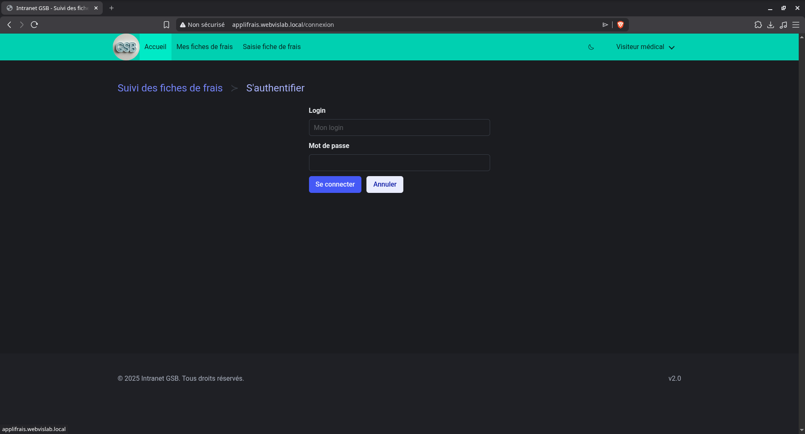
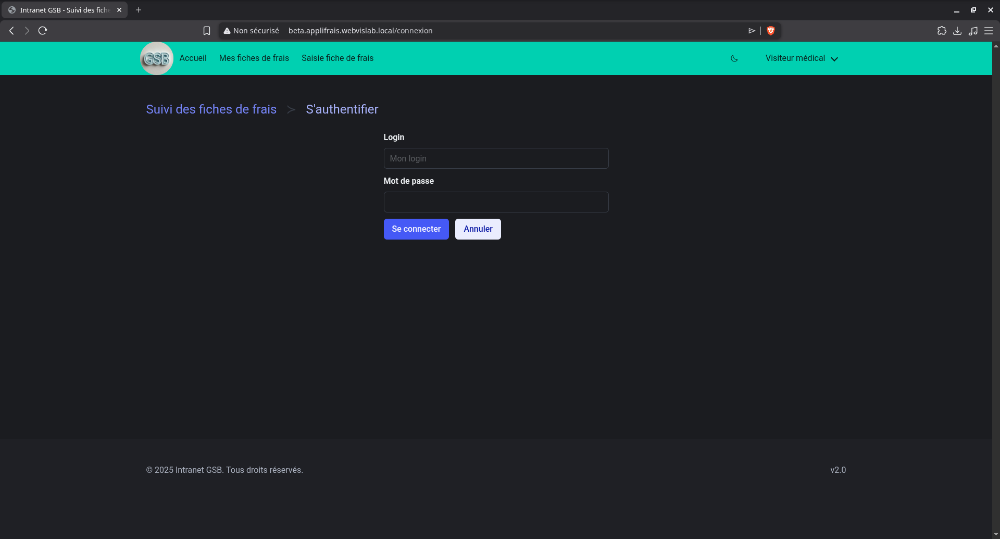
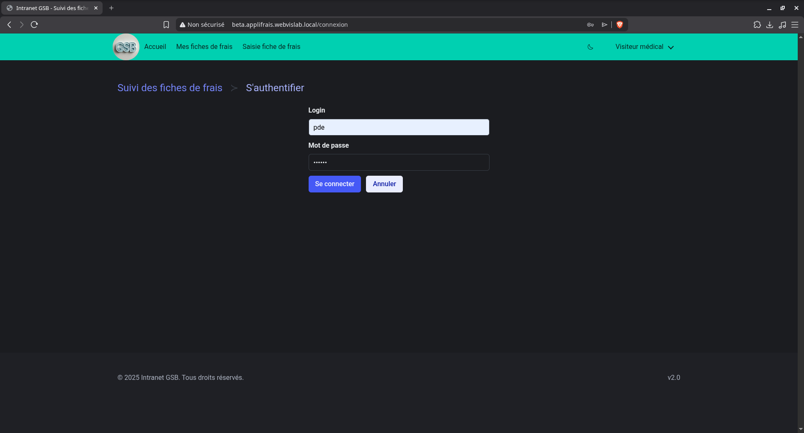
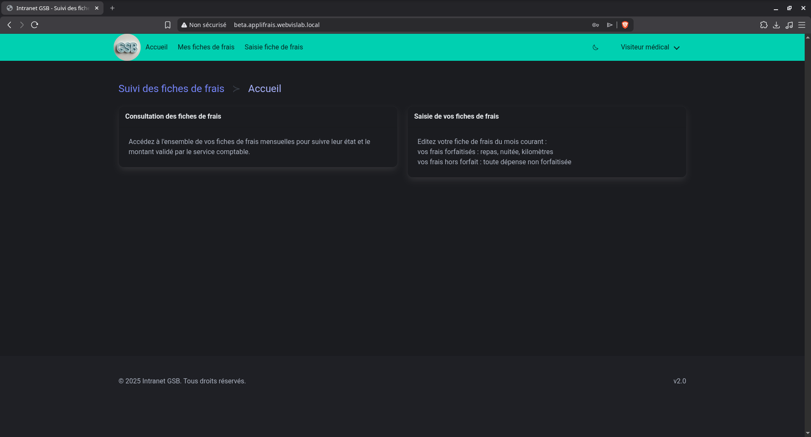
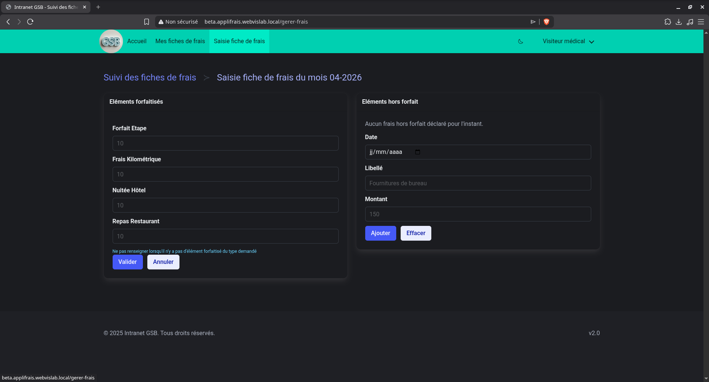
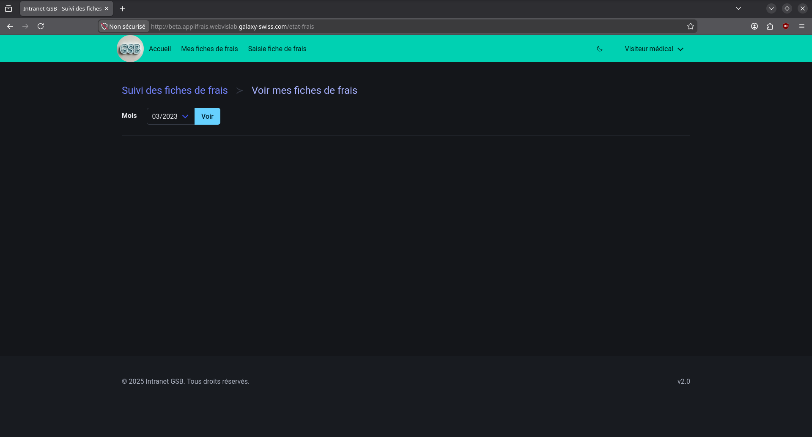
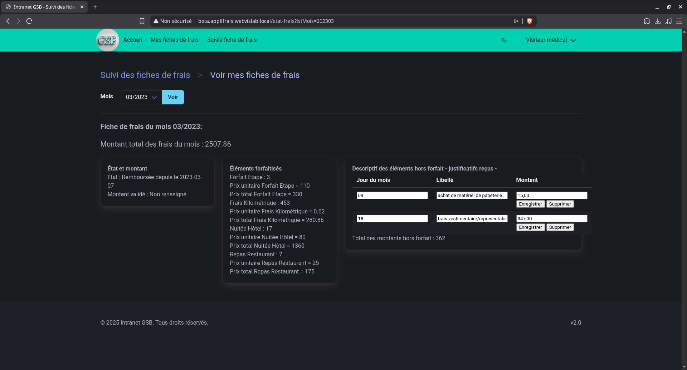
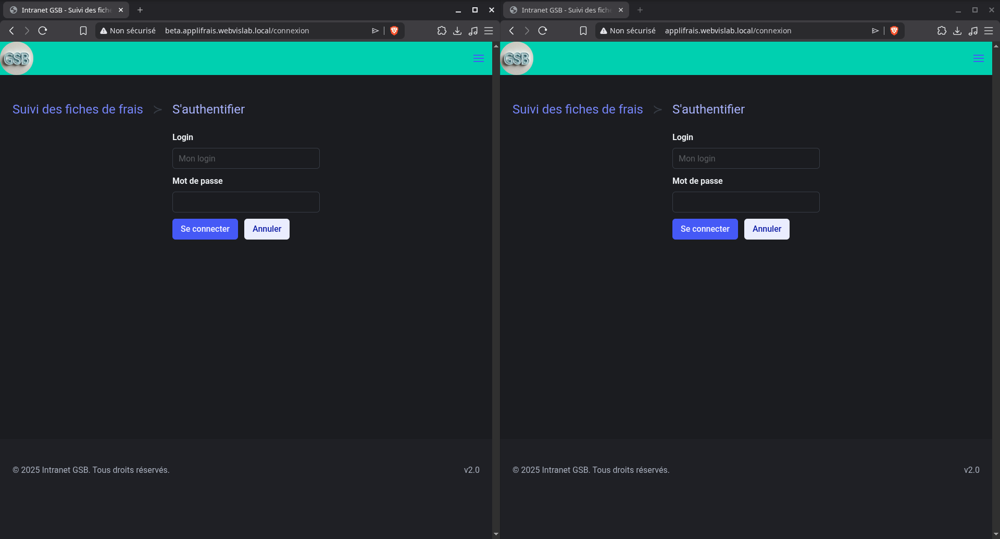

Affichage de la version 2.0 (branche 2.0) de l'application applifrais

Affichage de la version beta (branche main) de l'application applifrais

Connexion au site avec un des comptes des visiteurs médicaux

Affichage de la page d'accueil (page qui s'affiche lorsque l'on se connecte pour la première fois)

Affichage de la page saisie fiche de frais

Affichage de la page mes fiches de frais (sans cliquer sur le bouton "voir")

Affichage de la page mes fiches de frais après avoir cliquer sur le bouton "voir"

Affichage de la page qui s'affiche après une déconnexion (page d'accueil)
Affichage cote à cote des deux applications
Cela montre que le serveur webvislab peut servir les deux sites web en même temps

Captures d'écran prisent avant que la version finale ait été réalisé par le binome de SLAM